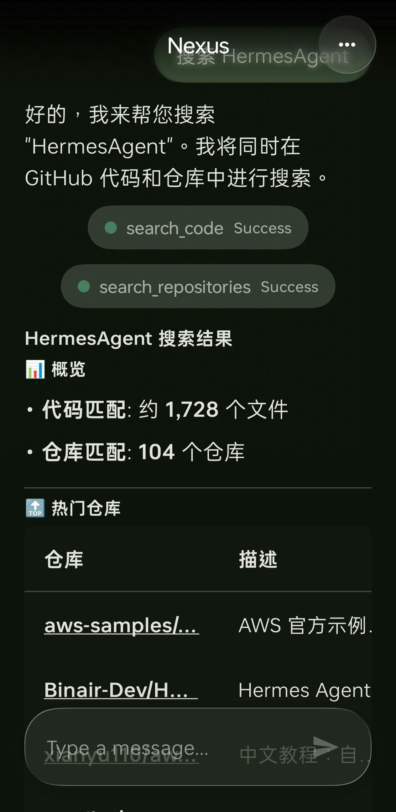
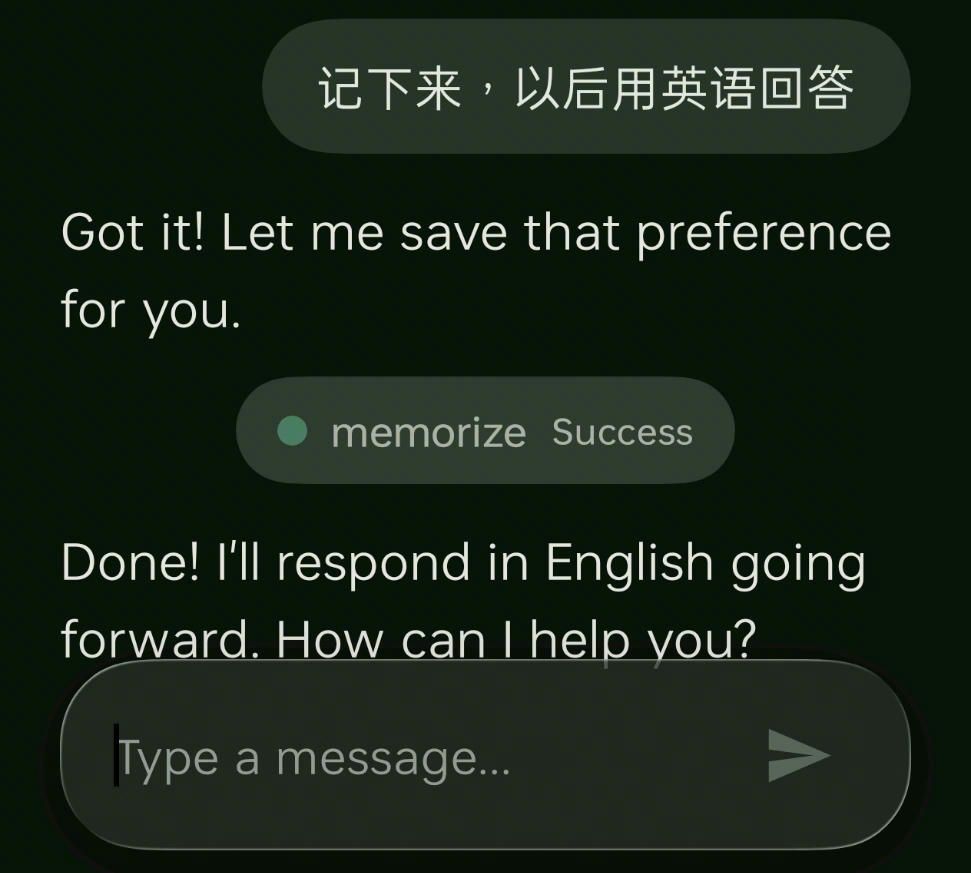
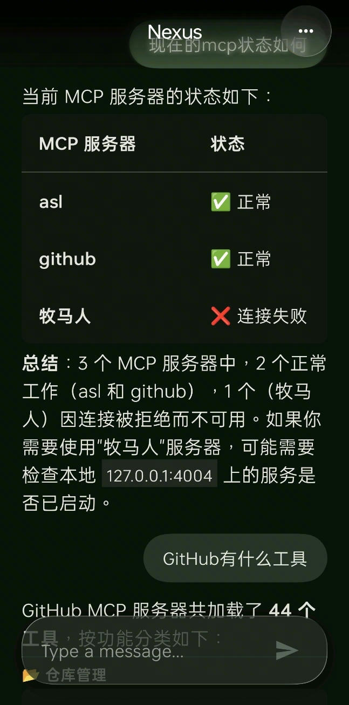

Works with OpenAI, Anthropic, Google, DeepSeek and compatible API endpoints.
Your everyday assistant, on your terms
Give your phone assistant a real mind.
Nexus connects the assistant you already use to your own model, memory and tools.

A familiar voice entry point becomes a personal action layer for the whole phone.
A simple idea with a larger shift behind it
The assistant should belong to the person holding the phone.
Most phone assistants are fixed products. Nexus turns that relationship around: you choose the model, decide what it remembers and define what it is allowed to do.

What changes in practice
One sentence can become a phone action.
Nexus goes beyond better answers. It gives the assistant a runtime for memory, built in tools, custom shell tools and external MCP services.
Open what you needLaunch apps or jump to websites from a natural request.
Remember preferencesStore useful facts so future conversations start with context.
Run trusted routinesWrap commands you understand into reusable tools for the assistant.
Reach outside the phoneConnect HTTP MCP servers so the assistant can discover more capabilities.
Built for real system entry points
Designed for people, built for system power.
The public story is simple: bring your own model and make the assistant useful. Underneath, Nexus coordinates host takeover, streaming responses, settings, tools and configuration across Android processes.

Capability surface
Model choice
Assistant takeover
Tool runtime
User control
A personal layer on top of Android.
Adapts to mainstream assistants such as Breeno and XiaoAi, with chat as a fallback.
Built in tools, custom tools and MCP servers are managed from one app surface.
API keys, memory, execution rules and takeover settings remain configurable.
Why this becomes a platform
Not just another chat app.
The more tools and services a user connects, the more useful the assistant becomes. The product grows from a model switcher into an action layer for the phone.
EntryUse the voice assistant people already know instead of asking them to learn a new app.
ControlLet users choose their own model provider, API key and endpoint.
MemoryPersist preferences and important information across conversations.
ExtensionAdd built in tools, custom commands and MCP services as the capability surface grows.
Current status
Your model. Your tools. Your phone.
Nexus is in beta today. It already points to a bigger category: a user owned assistant that can act across the phone while staying configurable and extensible.